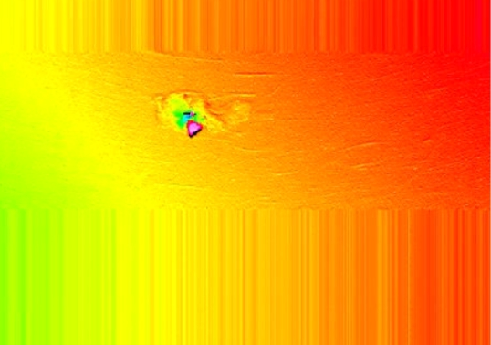
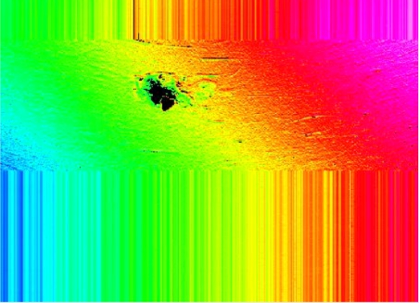
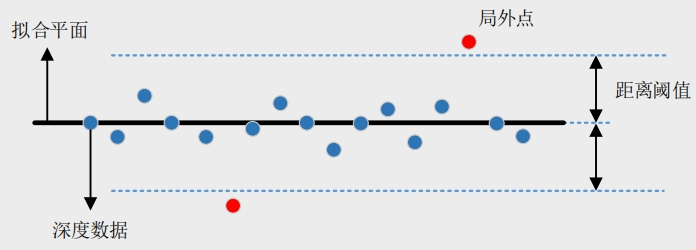

Chức năng là loại bỏ điểm ngoại lai trong hình ảnh dữ liệu chiều sâu, dựa trên dữ liệu điểm nội lai để tính toán được biểu thức phân tích của mặt phẳng ba chiều, từ đó có thể thực hiện các thao tác tiếp theo như chiếu chiếu, đo chiều cao và đo thể tích trên mặt phẳng cơ sở này.


| Phân loại | Tên tham số | Mô tả tham số |
|---|---|---|
| Cửa sổ thuộc tính | Bật phù hợp tập điểm ba chiều | Chọn “Có”, tham số chuỗi sẽ hiển thị tham số tập điểm ba chiều đầu vào, và sử dụng tập điểm ba chiều này để thực hiện phù hợp mặt phẳng. |
| Hướng mặt phẳng | Phân thành hai loại: Không gian pixel dương và không gian pixel âm. |
|
| Loại ROI | Khu vực cần phù hợp, phân thành 7 loại: Toàn bộ hình ảnh, Hình chữ nhật, Hình chữ nhật affine, Hình tròn, Đoạn vòng tròn, Elip, Đa giác. | |
| Khoảng cách phán đoán điểm ngoại lai | Giá trị tối đa của khoảng cách từ các điểm dữ liệu chiều sâu tham gia phù hợp đến mặt phẳng phù hợp. |
|
| Tỷ lệ điểm ngoại lai | Tỷ lệ điểm ngoại lai chiếm tổng số điểm dữ liệu chiều sâu. | |
| Độ tin cậy kết quả | Đo lường mức độ đáng tin cậy khi sử dụng điểm nội lai để xây dựng mặt phẳng phù hợp; độ tin cậy càng lớn, mặt phẳng phù hợp càng đáng tin cậy. | |
| Bật lấy mẫu | Có thực hiện lấy mẫu phù hợp hay không, chọn “Có” thì hiển thị tham số nửa chiều rộng lấy mẫu. | |
| Khoảng cách lấy mẫu | Mỗi lần cách bao nhiêu thì lấy mẫu một lần, rút ngắn thời gian phù hợp mặt phẳng. | |
| Bật mặt nạ | Dùng để lọc các khu vực không cần phù hợp, thêm mặt nạ cho phần đó. Chọn “Có” thì có thể thực hiện thiết lập mặt nạ qua giao diện nâng cao thuộc tính. | |
| Bật tính toán song song | Có bật tính toán song song hay không, chọn “Có” thì thuật toán sẽ bật chế độ tính toán song song OpenMP, có thể nâng cao tốc độ tính toán nhưng có thể xuất hiện tình huống thời gian tiêu hao không ổn định; chọn “Không” thì thuật toán sẽ tắt tính toán song song OpenMP. | |
| Phần trăm số luồng | Thiết lập phần trăm số luồng cho tính toán song song, phạm vi hiệu lực là (0, 0.75], tương ứng với phạm vi phần trăm (0%, 75%]. | |
| Cửa sổ hình ảnh | Hình ảnh chiều sâu | Hiển thị hình ảnh chiều sâu cần kiểm tra, hiển thị dưới dạng hình ảnh màu giả. |
| Khu vực phù hợp | Hiển thị khu vực cần phù hợp trên hình ảnh. | |
| Chuỗi dữ liệu | Hình ảnh đầu vào | Hình ảnh chiều sâu đầu vào cần kiểm tra, chỉ hiệu lực khi tham số trong thanh thuộc tính “Bật phù hợp tập điểm ba chiều” chọn “Không”. |
| Tập điểm ba chiều đầu vào | Tập điểm ba chiều dùng để thực hiện phù hợp mặt phẳng, chỉ hiệu lực khi tham số trong thanh thuộc tính “Bật phù hợp tập điểm ba chiều” chọn “Có”. | |
| Biến đổi tuyến tính hai chiều | Biến đổi tịnh tiến, xoay, thu phóng của mục tiêu so với mẫu, chỉ hiệu lực khi tham số trong thanh thuộc tính “Bật phù hợp tập điểm ba chiều” chọn “Không”. | |
| Giao diện nâng cao | Chỉ khi tham số trong thanh thuộc tính “Bật mặt nạ” chọn “Có”, thì hiển thị giao diện thiết lập mặt nạ. |
| Phân loại | Tên tham số | Mô tả tham số |
|---|---|---|
| Cửa sổ giám sát | Hình ảnh đầu ra | Đầu ra chiều dài và chiều rộng của hình ảnh chiều sâu cùng kích thước pixel, cũng như tham số dữ liệu chiều sâu, chỉ hiệu lực khi tham số trong thanh thuộc tính “Bật phù hợp tập điểm ba chiều” chọn “Không”. |
| Mặt phẳng phù hợp | Đầu ra kết quả mặt phẳng phù hợp, bao gồm vectơ pháp tuyến của mặt phẳng, độ lệch, góc nghiêng, góc xoay. |
|
| Độ phẳng | Đầu ra độ phẳng của mặt phẳng, tức là độ lệch tối đa trừ độ lệch tối thiểu, đơn vị: mm. | |
| Lỗi phù hợp | Đầu ra lỗi phù hợp của mặt phẳng. | |
| Số điểm phù hợp mặt phẳng | Đầu ra số điểm tham gia vào quá trình phù hợp mặt phẳng. | |
| Kết quả thực thi | Kết quả thực thi công cụ. | |
| Thời gian thực thi | Thời gian thực thi công cụ. | |
| Cửa sổ hình ảnh | Hình ảnh đầu ra | Hiển thị hình ảnh chiều sâu đã kiểm tra, hiển thị dưới dạng hình ảnh màu giả. |
| Chuỗi dữ liệu | Giống tham số cửa sổ giám sát, để sử dụng cho công cụ tiếp theo. |
Khoảng cách ngưỡng: Chỉ giá trị tối đa của khoảng cách từ điểm đến mặt phẳng phù hợp;
Điểm ngoại lai: Chỉ các điểm dữ liệu chiều sâu mà khoảng cách đến mặt phẳng phù hợp không thỏa mãn khoảng cách ngưỡng;
Điểm nội lai: Chỉ các điểm dữ liệu chiều sâu mà khoảng cách đến mặt phẳng phù hợp nằm trong khoảng cách ngưỡng;
Tỷ lệ điểm ngoại lai: Tỷ lệ điểm ngoại lai chiếm tổng số điểm dữ liệu chiều sâu, trong đó tổng điểm nội lai và điểm ngoại lai bằng tổng số điểm dữ liệu chiều sâu;
Độ tin cậy: Đo lường mức độ đáng tin cậy khi sử dụng điểm nội lai để xây dựng mặt phẳng phù hợp, độ tin cậy càng lớn thì mặt phẳng phù hợp càng đáng tin cậy.

Vectơ pháp tuyến: Vectơ N vuông góc với mặt phẳng, biểu thị hướng của mặt phẳng trong không gian ba chiều, như hình 2(a) cho thấy.
Góc nghiêng: Góc φ giữa hướng dương trục Z theo chiều kim đồng hồ với vectơ pháp tuyến N của mặt phẳng, phạm vi giá trị: [0,π], như hình 2(b) cho thấy.
Góc xoay: Góc θ giữa hướng dương trục X theo chiều ngược kim đồng hồ với vectơ chiếu N0 của vectơ pháp tuyến, phạm vi giá trị: [0, 2π), như hình 2(b) cho thấy.
Độ lệch: Khoảng cách lệch khi di chuyển gốc tọa độ đến mặt phẳng hiện tại P, nếu hướng di chuyển trùng với hướng vectơ pháp tuyến thì độ lệch là dương; ngược lại là âm, như hình 2(c)、(d) cho thấy.

Bước 1 Thiết lập khu vực phù hợp và hướng mặt phẳng
Để thu được dữ liệu điểm trong không gian ba chiều cần thiết lập vùng quan tâm. Khi thu được phương trình mặt phẳng phù hợp, cần xác định hướng mặt phẳng, tức là hướng của vectơ pháp tuyến mặt phẳng; hướng mặt phẳng bao gồm hai loại: Không gian pixel dương Z và không gian pixel âm Z, ý nghĩa vật lý cụ thể được trình bày trong bảng dưới đây. Hai hướng mặt phẳng thu được có giá trị vectơ pháp tuyến mặt phẳng là ngược nhau.

Bước 2 Thiết lập tham số, nửa chiều rộng lấy mẫu và có bật mặt nạ hay không
Theo nhu cầu thiết lập khoảng cách ngưỡng, độ tin cậy, tỷ lệ điểm ngoại lai trong trường hợp xấu nhất, nửa chiều rộng lấy mẫu và thiết lập mặt nạ.
Bước 3 Thực thi phù hợp và đầu ra kết quả
Sau các bước trên, có thể thực thi phù hợp. Đối với phù hợp mặt phẳng có điểm ngoại lai, kết quả đầu ra bao gồm: vectơ pháp tuyến của mặt phẳng phù hợp, độ lệch xoay và phương sai trung bình của phù hợp.
Không có
参见“\Samples\3D\深度图\带局外点平面拟合工具.gvp”。